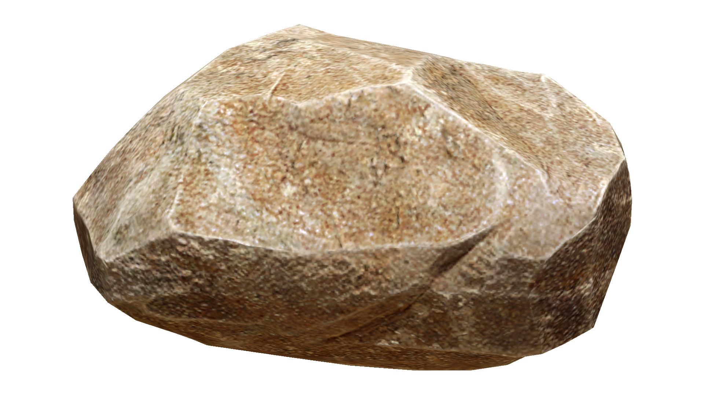
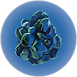
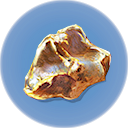

Planet 4546B is composed of many diverse biomes. Ranging from the safe shallows to the depths of the lost river, you will have lots to explore. At the begining of the game, your lifepod lands in the safe shallows. As the name suggests, the safe shallows are a safe zone where players can build a base and regroup before going back into the wild. other biomes near the starting area are the kelp forest, grassy plateaus, mountains, and the sparse reef. All of these listed are relatively safe for the player with limited hostile fauna. However, as you go further and deeper, the planet starts to become more dangerous. Biomes such as the underwater islands, blood kelp zone, bulb zone, jellyshroom cave, and crash zone all have there own dangerous creatures for the player to deal with. You can even find islands with alien precursor bases and old abandoned human research stations, both will there own purposes. But none of the biomes listed so far are quite as dangerous as the final two areas, the lost river and lava zone. Both of these biomes contain the most dangerous cretures of any biome so far, and other little gimmicks to slow down or harm the player. Vehichles are highly recomended at these Areas. Click here to see all the biomes
Kelp Forest:
Limestone Outcrop:
 Outcrops are the main way to collect materials in Subnautica. There are three kinds of outcrops, limestone, sandstone, and shale. Limestone outcrops contain only titanium or copper. These two materials are the most commonly used items to craft materials, such as tools and vehichles. sandstone outcrops can give silver, gold, or lead. These items are more rare and are used to make a variety of technical items, such as wiring kits, computer chips, and fabricators. last but not least are shale outcrops, they can give lithum, gold and diamond. While gold can also be found in sandstone outcrops, lithium and diamond are the rarest items that can be found using outcrops. they are mainly used for vehichle upgrades. There are other means of collecting items, but outcrops are the most reliable and common way.Titanium:
Gold:
 The vegetation on planet 4546B is crucial to your survival. from crafting items to a source of food, it is critical you collect certain plants along the way. For example, the acid mushroom is used to make batteries along with copper, batteries are essential to powering your vehichles. However, if you were to knife an acid mushrrom, you would face the consequences as the release a toxic gas that harms you. Not all plants are friendly.
Nam ut dictum erat, vitae feugiat lectus. Donec aliquet imperdiet tempor. Interdum et malesuada fames ac ante ipsum primis in faucibus. Vestibulum sollicitudin massa at quam auctor, ut egestas lectus convallis.